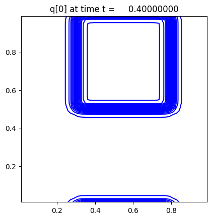

< < < Index > > >

Image source: /Users/rjl/Downloads/clawpack-v5.10.0pyclaw/pyclaw/examples/advection_2d/_plots/frame0002fig1.png
Other figures at this time: q[0] contour All Figures
Other frames: 0 1 2 3 4 5 6 7 8 9 10 All Frames